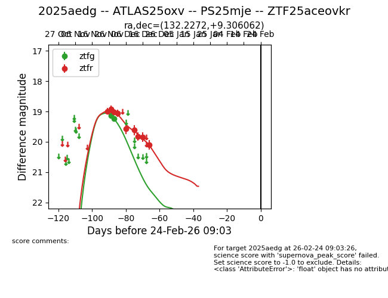
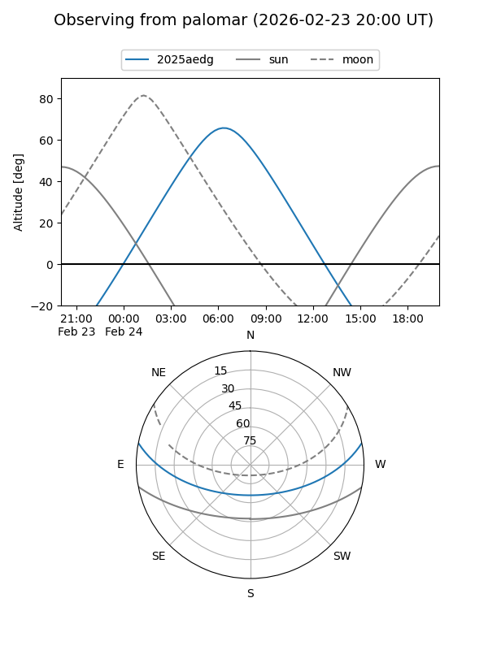
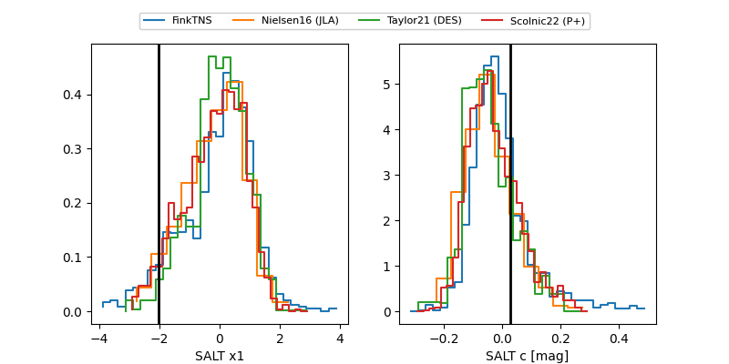

2025aedg
Target 2025aedg at 2025-12-20 11:59
Aliases and brokers:
FINK: fink-portal.org/ZTF25aceovkr
Lasair: lasair-ztf.lsst.ac.uk/objects/ZTF25aceovkr
ALeRCE: alerce.online/object/ZTF25aceovkr
TNS: wis-tns.org/object/2025aedg
YSE: ziggy.ucolick.org/yse/transient_detail/2025aedg
alt names
ZTF25aceovkr (ztf,fink_ztf)
2025aedg (tns,yse)
ATLAS25oxv (atlas)
Coordinates:
equatorial (ra, dec) = 132.2272,+9.30606
equatorial (HMS+DMS) = 08:48:54.53,+09:18:21.82
galactic (l, b) = (218.0322,+30.29510)
Flags:
Photometry:
last ztfg=19.23, ztfr=20.10
2 ztfg, 9 ztfr detections
Lightcurve

Visibility


Additional plots
